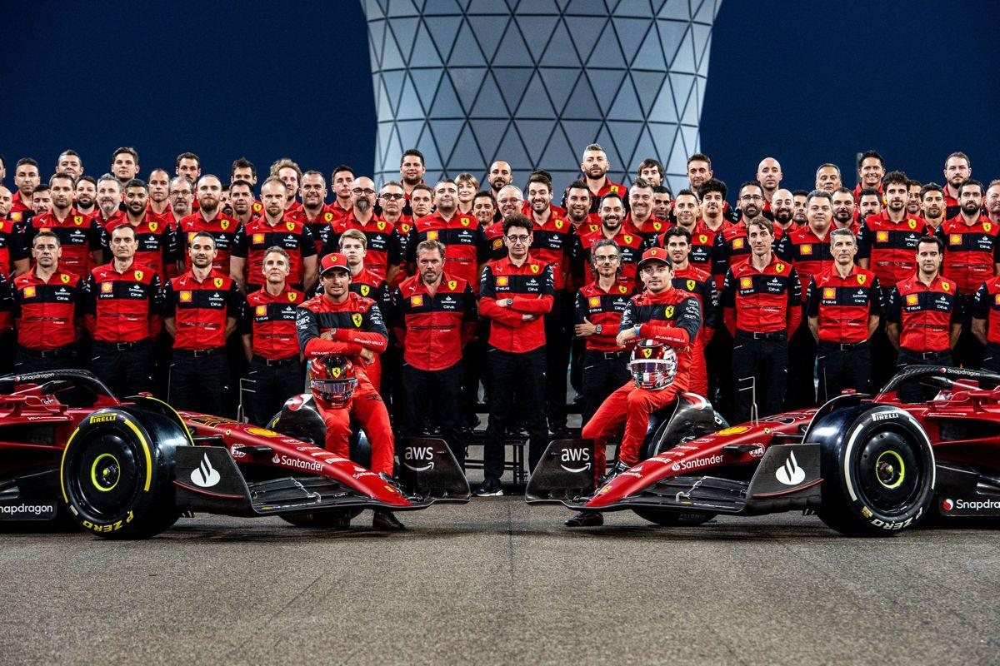
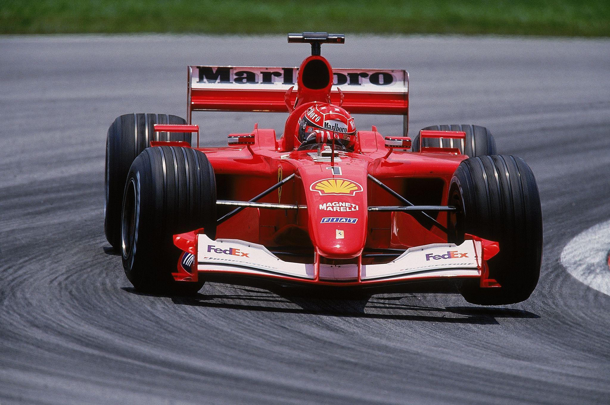
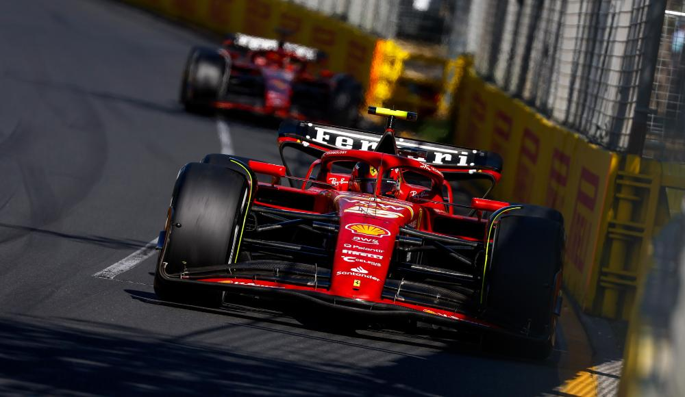

La Ferrari in Formula 1
La Scuderia Ferrari è una delle squadre più conosciute nella storia della Formula 1.
Ferrari partecipa al Campionato del Mondo di Formula 1 fin dalle prime stagioni del campionato.
La Formula 1 è diventata una parte importante dell'identità Ferrari e ha permesso all'azienda di sviluppare nuove tecnologie e nuove soluzioni per le automobili.
Importanza della Formula 1 nella storia Ferrari.
La Scuderia Ferrari

La Scuderia Ferrari è stata fondata da Enzo Ferrari nel 1929.
Prima della nascita del campionato di Formula 1, la Scuderia partecipava già a diverse competizioni automobilistiche.
Nel corso degli anni la squadra è diventata uno dei simboli più importanti del motorsport italiano.
Il colore rosso delle vetture Ferrari è diventato uno degli elementi più riconoscibili nelle gare.
Scopri di più sulla Scuderia
La Scuderia Ferrari è conosciuta in tutto il mondo per la sua lunga storia nelle competizioni.
L'inizio della Formula 1
Il Campionato del Mondo di Formula 1 iniziò nel 1950.
Ferrari partecipò al campionato fin dalle prime stagioni e iniziò a ottenere importanti risultati.
La partecipazione alle gare permise a Ferrari di confrontarsi con altri importanti costruttori automobilistici.
L'esperienza nelle competizioni contribuì anche allo sviluppo tecnico delle automobili Ferrari.
1950 - Inizio del Campionato del Mondo di Formula 1.
I piloti Ferrari
Durante la sua lunga storia in Formula 1, Ferrari ha avuto molti piloti importanti.
Alcuni piloti famosi che hanno corso per Ferrari sono:
- Alberto Ascari
- Juan Manuel Fangio
- Niki Lauda
- Gilles Villeneuve
- Michael Schumacher
- Kimi Räikkönen
Ogni pilota ha contribuito in modo diverso alla storia della Scuderia Ferrari.
Michael Schumacher e Ferrari

Michael Schumacher è uno dei piloti più importanti nella storia recente della Ferrari.
Il pilota tedesco entrò nella Scuderia Ferrari nel 1996.
Durante il periodo con Ferrari conquistò diversi titoli mondiali e numerose vittorie.
Il periodo di Schumacher è ricordato come una parte molto importante della storia moderna della Scuderia.
Periodo Ferrari di Schumacher
Schumacher rappresenta una delle figure più importanti della storia moderna della Scuderia Ferrari.
Le vittorie in Formula 1
Ferrari ha conquistato numerosi successi nel Campionato del Mondo di Formula 1.
I successi della Scuderia comprendono vittorie sia nel campionato piloti sia nel campionato costruttori.
Tra i piloti che hanno conquistato il titolo mondiale con Ferrari troviamo:
- Alberto Ascari
- Juan Manuel Fangio
- John Surtees
- Niki Lauda
- Jody Scheckter
- Michael Schumacher
- Kimi Räikkönen
Le monoposto Ferrari
Le automobili utilizzate in Formula 1 sono chiamate monoposto.

Le monoposto Ferrari sono progettate per essere molto veloci e leggere.
La progettazione comprende il motore, l'aerodinamica, le sospensioni, i freni e molti sistemi elettronici.
Ogni elemento della vettura viene studiato per ottenere le migliori prestazioni possibili.
Formula 1 e tecnologia
La Formula 1 è anche un importante laboratorio per lo sviluppo tecnologico.
Durante le competizioni vengono raccolti molti dati che possono essere utilizzati dagli ingegneri per migliorare la vettura.
- Aerodinamica
- Motore
- Freni
- Sospensioni
- Elettronica
- Materiali leggeri
Alcune conoscenze sviluppate nelle competizioni possono contribuire anche allo sviluppo delle automobili stradali.
I tifosi della Ferrari
I tifosi della Ferrari sono conosciuti come tifosi della Scuderia e sono presenti in molti Paesi del mondo.
Durante le gare molti tifosi utilizzano il colore rosso per sostenere la squadra.
La Ferrari rappresenta una parte importante della cultura del motorsport italiano.
Curiosità sulla Ferrari in Formula 1
- Ferrari è presente in Formula 1 fin dalle prime stagioni del campionato.
- La Scuderia Ferrari è conosciuta per le sue vetture rosse.
- Molti piloti famosi hanno corso per Ferrari.
- La Formula 1 ha contribuito allo sviluppo tecnologico delle automobili Ferrari.
- Ferrari ha ottenuto numerose vittorie e titoli mondiali.
Ferrari e il futuro della Formula 1
La Formula 1 continua a essere una parte importante della storia Ferrari.
Le competizioni permettono agli ingegneri di sviluppare nuove tecnologie e migliorare continuamente le prestazioni delle monoposto.
- Ferrari continua a guardare al futuro della Formula 1.